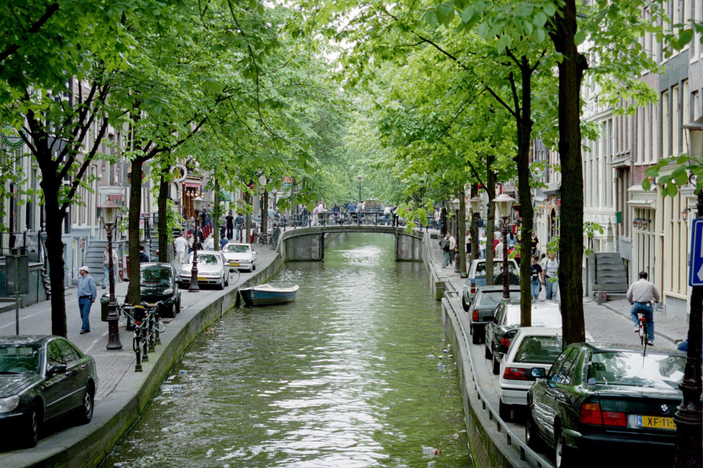

About Netherlands
Netherlands, known for its picturesque canals, historic architecture, and innovative urban planning, is a dream destination for those fascinated by city infrastructure and urbanistics.
Gallery



Explore the captivating city infrastructure and urbanistics that make Netherlands a dream destination.
Netherlands, known for its picturesque canals, historic architecture, and innovative urban planning, is a dream destination for those fascinated by city infrastructure and urbanistics.
The Netherlands is a destination that entices with its riveting architecture and inventive urban planning, resulting in a sanctuary where sophistication and simplicity coexist. Any city embraces pedestrian and environmental ideals and welcomes you to a way of life that goes beyond consumerism. Here, you don't need to sink in luxury, have expensive cars, or have ideal health in order to fully enjoy life in the city, because of how accessible it is. You get a feeling of warmth and belonging as you stroll through picturesque villages or busy metropolises, that even doesn't feel like that because how quiet it is without all these cars. The cities of the Netherlands excite your natural curiosity and entice you to explore. They create a universe in which every turn reveals a new narrative and each step is a celebration of freedom.